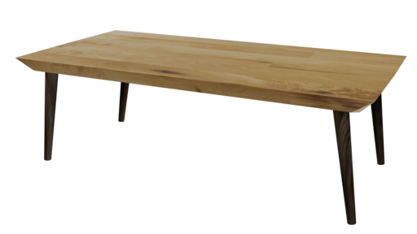
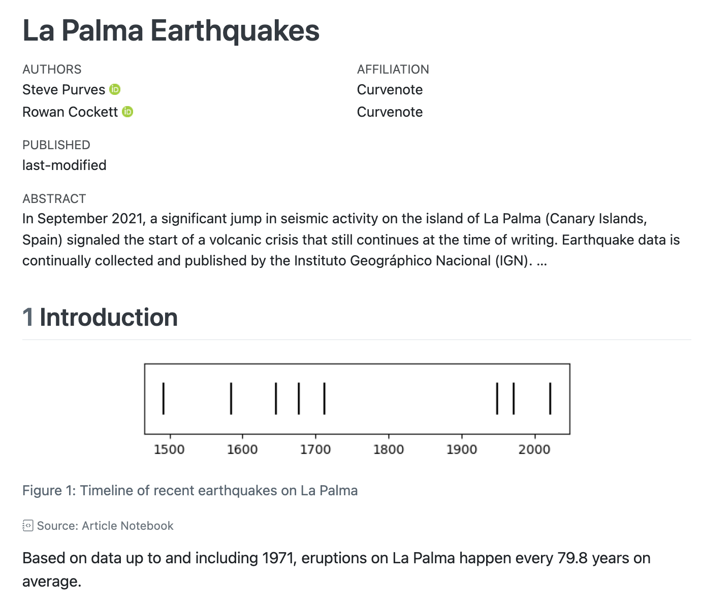

Quarto 1.4 has been officially released! You can get the current release from https://quarto.org/docs/download/.
This release has tons of new features. Some of the big ones we want to spotlight are: Dashboards, Typst, Inline Code Syntax, Cross-References and Manuscripts.
Dashboards
Quarto Dashboards streamline the creation of interactive dashboards, giving you an effortless way to lay out interactive components, visualizations, tabular data, and annotations. Here are some examples (click on the image to visit the live version):


For the source code of these dashboards and additional examples see the examples gallery. When you are ready to build your own Quarto dashboard head to our guide on Dashboards.
Typst
Typst is a new open-source markup-based typesetting system that is designed to be as powerful as LaTeX while being much easier to learn and use. Typst creates beautiful PDF output with blazing fast render times.
Quarto 1.4 includes the Typst CLI, so all you need to get started creating PDFs via Typst is to use format: typst:
hello-typst.qmd
---
title: "Hello Typst!"
format: typst
---
My first Typst documentWe are particularly excited about how easy it is to make templates for journal articles, conference posters, newsletters and more with Typst. Here are some examples you can use in Quarto as custom formats:


{kind=link}
Start your Typst journey with Quarto in our guide on Typst Basics.
Inline Code Syntax
Quarto 1.4 introduces a unified syntax for including computed values inline. The syntax for inline code is similar to code blocks, except you use a single tick (`) rather than triple ticks (```), and you can use it in the middle of markdown:
Jupyter
```{python}
radius = 5
```
The radius of the circle is `{python} radius`This syntax works for any Jupyter kernel—so for Julia you would write an inline expression as `{julia} radius`).
Knitr
```{r}
radius <- 5
```
The radius of the circle is `{r} radius`OJS
```{ojs}
radius = 5
```
The radius of the circle is `{ojs} radius`And don’t worry if you are used to using `r ` that syntax remains fully supported. Read more at Inline Code.
Cross-References
Cross-references have been overhauled in Quarto 1.4, enabling you to do things like:
Flexibly define the content of float cross-references (e.g. figures, tables and code listings) with the new Cross-Reference Div Syntax. For example, 表 1 is an image treated like a table:
::: {#tbl-table}  An image treated like a table :::表 1: An image treated like a table And notice if you hover over the reference as it appears in the text, e.g. hover over this link to 表 1, you’ll get a floating preview of the content—that’s new too.
Define custom types of float cross-reference, which you could use to create cross-references to Videos, Diagrams or Supplemental Figures.
Cross-reference executable code cells, callouts and remarks and solutions.
Manuscripts
Quarto manuscript projects provide a framework for writing and publishing scholarly articles. You can use notebooks (.qmd or .ipynb) as the source of content and computations, and then publish these computations alongside the manuscript, allowing readers to dive into your code.
The output of a manuscript project is a website containing the article in multiple formats (e.g. LaTeX, MS Word) along with rendered versions of the notebooks in the project:


Read more about manuscripts and how to get started in our guide to Manuscripts.
Other Highlights
Some other highlights include:
Shiny for Python—Support for using Shiny for Python within Quarto documents.
Script Rendering—Render specially formatted
.py,.jland.rscript files.Easy Binder Configuration for Quarto Projects—Support for generating files required to deploy a Quarto project to Binder.
Connect Email Generation—Extends the
htmloutput format so that HTML/text emails can be created and selectively delivered through Posit Connect.Publish to Posit Cloud—Adds
posit-cloudas a venue forquarto publish.Lightbox Treatment for Images and Figures—Support for zooming into images and figures as well as grouping multiple images into a gallery.
If you build Quarto extensions, you should also be aware of some developer-facing changes:
Lua changes—New Support for crossreferenceable elements in filters, extensible renderers of quarto AST nodes such as
FloatRefTargetandCallout, the use of relative paths inrequire()calls, and more precise specification of where a filter will be inserted.AST processing changes—Improvements to the HTML table processing added in v1.3 and a way for LaTeX raw blocks to include Quarto-compatible markdown for processing.
You can find all the other changes in 1.4 in the Release Notes.
Acknowledgements
We’d like to say a huge thank you to everyone who contributed to this release by opening issues and pull requests:
AaronGullickson, abichat, abigailhaddad, aborruso, abraver, acebulsk, aghaynes, ajay333a, ajsmit, ALanguillaume, AlbertRapp, aletroux, alex-vinogradov, alexCardazzi, allefeld, am-lh, andlekbra, andrefmello91, AndreiBiziuk, andrewheiss, anielsen001, apsteinmetz, AQLT, arnaudgallou, aronatkins, atsyplenkov, b-rodrigues, Balaika, baptiste, barryrowlingson, batpigandme, bcongelio, benabel, benjaminschlegel, bfordAIMS, blacksqr, boshek, BradyAJohnston, brtarran, bryanhanson, bweatherson, c-zippel, cadojo, camilogarciabotero, cbrnr, ccamara, cermak-consulting, chendaniely, ChrisJefferson, ChristopherBarrington, christopherkenny, chrisvoncsefalvay, chuxinyuan, cjber, coatless, coltongearhart, CorradoLanera, csgroen, dalejbarr, DamonCharlesRoberts, Damonsoul, daniel-smit-haw, danieltomasz, danmackinlay, daranzolin, darthlite, das-g, davidfoxcroft, davidpomerenke, ddotta, declann, dense-set, dfolio, dgkf, dkapitan, dlakelan, dloss, dmkaplan2000, DOSull, dpabon, dpprdan, DriesSchaumont, drscotthawley, dschief001, dweng0, e-miz, EconomiCurtis, edavidaja, edibotopic, eeenilsson, ehudkr, eitsupi, EllaKaye, emdelponte, emilBeBri, EmilHvitfeldt, emitanaka, epruesse, ercbk, EricJC24, ericvmai, erikerhardt, espinielli, Eugloh, fecet, Felixmil, FeralFlora, finkelshtein, fkohrt, fradav, fuhrmanator, fulem, gadenbuie, garrettgman, GegznaV, Gewerd-Strauss, gimmiereddy, gl-eb, grantmcdermott, gregmacfarlane, gregoireurvoy, gregswinehart, gshotwell, GuillaumeDehaene, gvelasq, gyansinha, hamelsmu, harrelfe, harrylojames, harrysw1729, HelenaLC, helmingstay, HenrikBengtsson, homerhanumat, icarusz, ig0101, ijlyttle, ijmitch, irmoodie, isabelizimm, IULibScholComm, ivelasq, jack-davison, Janidai, jarbet, jasonaris, jatalah, JauntyJJS, jb-leger, jcheng5, jdonland, jdutant, jeremy9959, jeroenjanssens, jfb-h, jfunction, JGobeil, jgomezdans, jgostick, jhchou, jhk0530, jhunter-aof, jimgar, jimjam-slam, jmbuhr, jmcvw, Joda66, joelostblom, joelvonrotz, johngoldin, jonassmedegaard, jpatteet, jrowen, jthomasmock, jtr13, juba, juliantao, jurjoroa, justanothergithubber, jzelner, KaiWaldrant, kbvernon, kcarnold, kdheepak, kdzhang, kejaed, kendonB, knuesel, Kodiologist, kompre, koushikkhan, krishaamer, ksreyes, kwangkim, kyleGrealis, lcnbr, leeroyaus, leonardblaschek, Lextuga007, lidavidm, lillemets, lnnrtwttkhn, luifrancgom, Lulliter, lyndondrake, m-clark, m-guggenmos, machow, maelle, magnusnosnes, MarieEtienne, marklhc, martinfleis, Martinomagnifico, masud90, matanhakim, Matoyatapika, matthew-brett, matthewfinkbeiner, maxdrohde, mfenner, mfisher87, MichaelPascale, mikabr, milanmlft, mine-cetinkaya-rundel, Minh-AnhHuynh, miwojc, mloubout, msarahan, msh855, mslynch, murattasdemir, mvanaman, nanxstats, netique, netw0rkf10w, nickriches, njbart, noahmf, nqt2022, nwisn, nwvhb, OlexiyPukhov, olivroy, ollyhensby, pastorn, pat-s, patgd, petrbouchal, petzi53, phongphuhanam, pieterprovoost, piotr-kaczmarski, pjastr, pommevilla, prosoitos, ptram, qiushiyan, ratnanil, ravicodelabs, rcannood, rchaput, regob, remlapmot, resmartiZH, rgaiacs, rmcd1024, rmflight, rnd195, robolyst, rogerbramon, ronblum, ropeladder, rowanc1, RoyiAvital, rsenft1, salim-b, samcarter, sceptri, sda030, sebacea, sebastian-c, sebastianrowan, sebffischer, seeM, Serenade600, Servinjesus1, shafayetShafee, sharon-wang, shirdekel, simonjackman, sje30, sjspielman, skaltman, smithbn, snhansen, Sparrow0hawk, sswam, stefanbringuier, stephan-koenig, steveguil, Sumidu, sun123zxy, tegorman13, tflexs, th0ger, the-solipsist, TheGoodCartman, TheisFerre, thomascwells, TLouf, tobydriscoll, tom67, tonyaseverson, topepo, tpoisot, TrainedMusician, TS-CUBED, ttalVlatt, Tutuchan, tylermorganwall, ulyngs, ute, vfacta, vitpetrik, VivaldoMendes, VladimirAlexiev, Walser52, warrickball, wch, weihuangwong, wilcar, willingc, wjdenny, wklimowicz, XiangyunHuang, xtimbeau, yoyo25, YuanchenZhu2020, yuxi-liu-wired, yyzeng, zenggyu, Zeno-of-Elea, zief0002, Zuline
The party popper emoji in the listing and social card image for this post comes from OpenMoji– the open-source emoji and icon project. License: CC BY-SA 4.0
{kind=link}